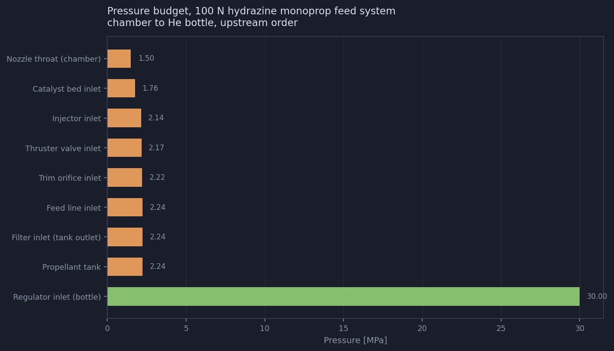
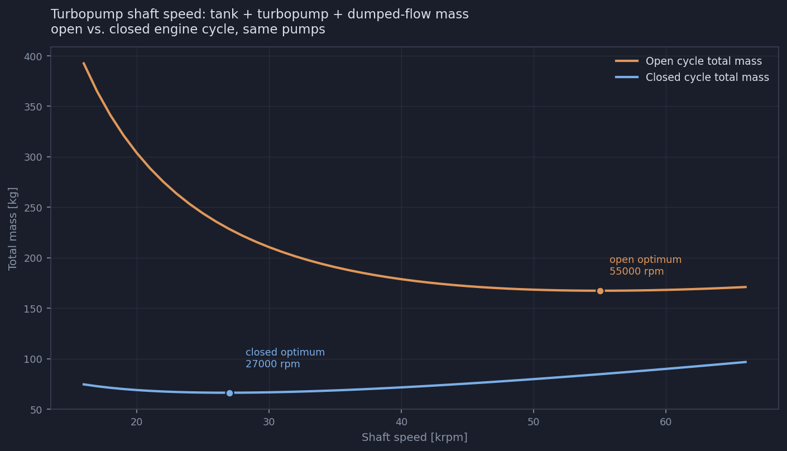
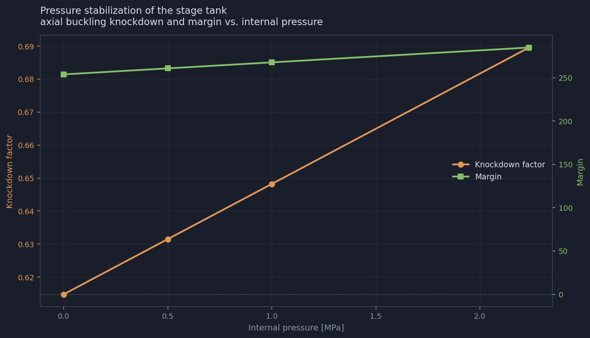
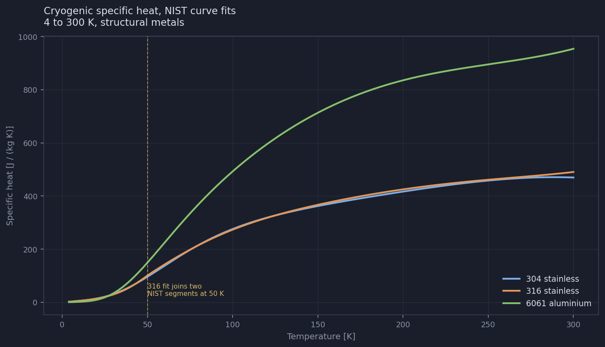
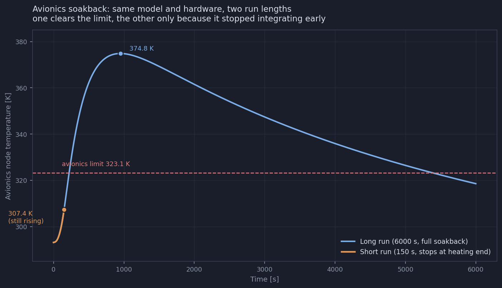
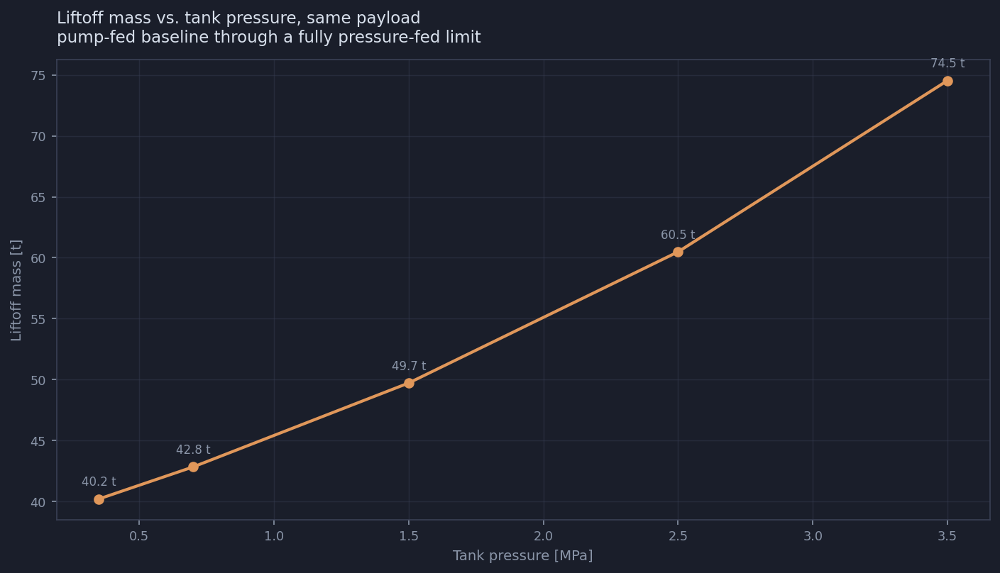
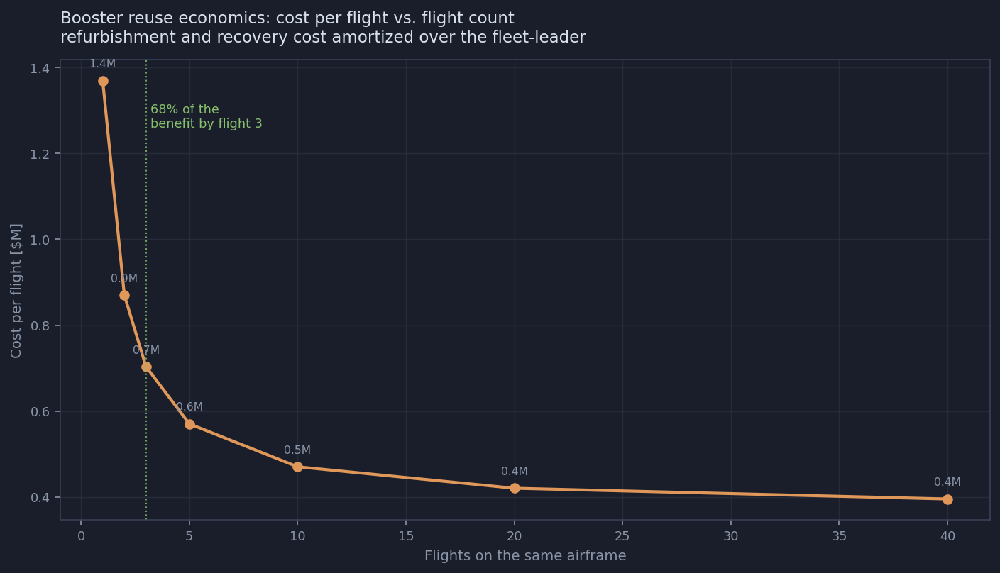
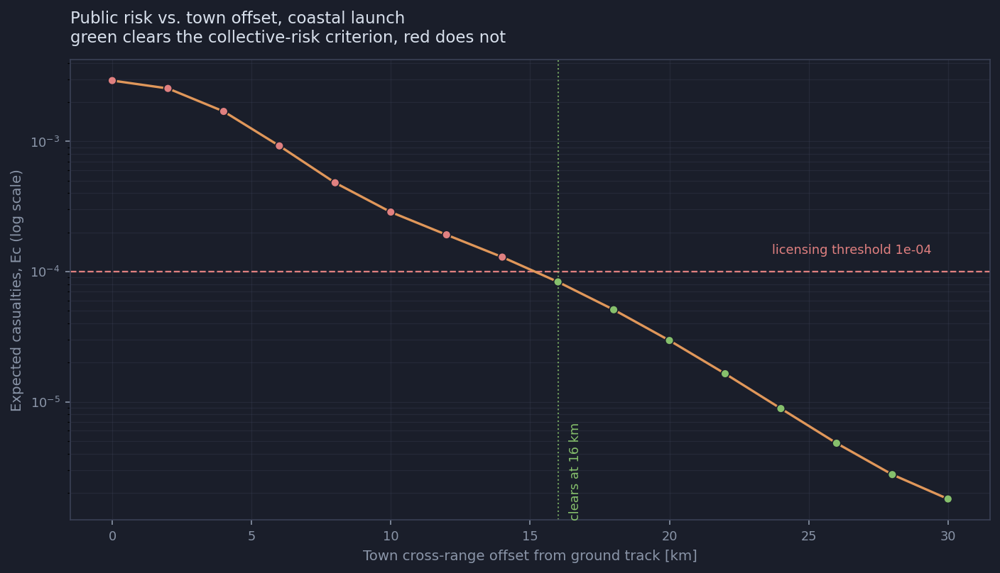

Sixteen engineering domains covering an orbital-class launch vehicle from propellant properties to range safety, each pairing a reference document set with a class-per-component Python library that sizes and analyzes real hardware. Every result on this page comes from actually running the library it describes: the tables are transcribed from a worked example's own output, and the eight figures are generated by scripts that live next to the code they plot, not drawn by hand.
What it is, and the rule that shapes it
The repository exists to build expert-level working knowledge of orbital-class launch vehicle
engineering as a whole system, not only the propulsion slice that comes first. Every domain
follows the same shape: a README.md stating what it covers, a
<domain>Library/ of one Python class per component built on real property
data, a docs/ set of reference documents written to be designed from, a tiered
tests/ suite, and a codeInterface.py worked example that runs a
realistic scenario end to end. fluidSystems was built first and is the template;
every later domain follows its interface convention -- setInputs(),
calculate*() or size*(), generateReport() -- so a class in
rangeSafetyAndFTS looks and behaves like a class in fluidSystems.
A shared common/ package holds the eight modules more than one domain needs, so a
quantity like 316L's yield strength or the definition of an SCFM is written down once. Two
domains nest a second layer of the same pattern one level down: propulsion carries
six sub-domains covering the hardware between the tank outlet and the nozzle exit, and
aerospaceMaterials carries ten process sub-domains, three of which are deliberately
documentation only because their content is a database axis rather than a computation.
validation/referenceCases.py stating what has not been checked against anything external, and why.validation/ exists: every domain needs at least one
comparison against published hardware or a governing standard, and no reference may be adjusted
to make a test pass. A disagreement is recorded as the tool being wrong, the comparison being
wrong, or the difference being real and understood -- never fixed by editing the reference.
Library before documents, so every number a document cites has already been produced by running code
| Stage | Content | Done when |
|---|---|---|
| 1 | Component classes and a tiered test suite | Tests pass, uniquely named helper module in place |
| 2 | codeInterface.py worked example, driven by a JSON asset | Runs end to end, numbers verified |
| 3 | Documents, written against stage 2 numbers | Every numeric claim produced by code, every snippet executes |
| 4 | Verification: links resolve, snippets run, full suite green | Nothing in the domain contradicts anything else in it |
| 5 | Validation against published hardware or a standard | An external reference case exists, or the register says why not |
Stages 1 through 4 establish that the code does what it was written to do. They say nothing about whether what it was written to do is right, which is what stage 5 is for. The hard part of stage 5 is not finding a reference, it is establishing that it measures the same quantity: the propulsion library models a thrust chamber, and a published engine specific impulse is a whole-engine figure that includes the cycle. RS-25 is closed cycle and validates the library to 1.7 percent; F-1 is open cycle and disagrees by 8.1 percent, and stays in the reference set precisely because it marks the boundary of what the library covers.
A flat sys.path resolves identically named modules in different domains to one
entry in sys.modules. The first one imported wins and the rest silently receive
it.
structuresUtils,
thermalUtils, propulsionUtils, never utils.
fluidSystems and aerospaceMaterials predate the rule and keep
utils rather than being churned.codeInterface.py must be loaded by explicit path
(importlib.util.spec_from_file_location), never by import
codeInterface, or a second domain's tests can silently pass against the first
domain's module.Not every sub-domain earns a class. A class that wraps a lookup table is a class not to build.
aerospaceMaterials sub-domains take this
path.The foundation every domain builds on, written down once
Each domain's own helper module locates common/ by walking up from its own file
until it finds it, then re-exports what it needs, so a call site inside any library sees one flat
namespace regardless of nesting depth. The test for whether something belongs here: name the
second domain that needs it. If none exists, it belongs to the one domain that does.
| Module | Provides |
|---|---|
units.py | Unit conversion constants and the standard atmosphere model, shared by every domain |
errors.py | The shared exception hierarchy -- typed errors that carry context |
materials.py | Structural and thermal property lookup for common alloys, plus surface roughness by process |
cryogenicProperties.py | NIST cryogenic specific heat curve fits, 4 to 300 K, for the metals a chill-down needs |
structures.py | Thin-wall relations general enough for more than one domain |
solvers.py | The two root finders every sizing routine in the repository depends on |
fluidProperties.py | Unified fluid property access -- REFPROP, CoolProp, or a correlation table -- shared by every domain that touches a fluid |
reporting.py | The shared plumbing every component class uses: applyInputs() and formatReportTable() |
The template every later domain follows
Valves, lines, orifices, fittings, seals, leaks, welds, insulation, water hammer, hydrazine catalyst beds and monopropellant thrusters, and pressurization -- sixteen components chained by hand into a pressure budget. Full network solving is explicitly out of scope; this is a small custom GFSSP for design decisions and light single-component analysis, not a network solver. It was built first and is the template every other domain's interface convention comes from.
| Class | Models |
|---|---|
Orifice | Sizing and flow across four regimes: incompressible, cavitating, subsonic and choked compressible gas |
CavitatingVenturi | Choked liquid flow control with no moving parts, and its operating margin |
Valve | IEC 60534 Cv sizing, choking (FL/xT), flow characteristics and authority, actuation loads |
Line | Darcy-Weisbach plus minor losses, diameter sizing, ASME B31.3 wall thickness |
Fitting | Joint family selection, pressure loss, installation torque, compatibility |
Seal | O-ring gland sizing: squeeze, fill, stretch, extrusion, permeation |
LeakPath | Leak units, flow regime (viscous/molecular), gas scaling, detection method, test design |
Weld | Joint efficiency and HAZ derating, ferrite number (WRC-1992), inspection level |
Insulation | 1-D resistance network heat leak, boil-off, condensation and liquid-air surface temperature |
WaterHammer | Joukowsky surge, wave speed, closure time against pipe period |
CatalystBed | Hydrazine decomposition chemistry, Ergun bed sizing, cold start |
MonopropThruster | Nozzle sizing, Isp, blowdown decay, pulse mode, hydrazine calibrated |
Pressurization | Regulated and blowdown pressurant mass, bottle and ullage sizing, real gas (Z) |
Regulator | Droop and SPE band, relief sizing, burst disc, pressure set-point ladder |
CheckValve | Cracking pressure, chatter margin, reverse leakage |
Filter | Rating selection (protected-passage rule), element sizing on life, clean dP |
The chain is walked in reverse flow order, chamber to bottle, because that is how a pressure budget is actually built: add every loss going upstream and arrive at the required tank pressure. Chamber pressure 1.50 MPa and vacuum Isp 221.9 s give 0.04596 kg/s propellant flow; the required tank pressure comes out at 2.236 MPa after 736 kPa of feed system loss, 49 percent of chamber pressure.

fluidSystems/generatePressureBudgetPlot.py from the same stations list
the worked example prints. The regulator inlet at 30 MPa sits off the scale of everything
downstream of it by an order of magnitude, which is the entire reason a regulator exists.
The test-engineering counterpart to the design library: qualification versus acceptance, proof
and burst, leak method selection, environmental testing, life testing, GUM uncertainty budgets,
and sample-size and reliability demonstration. Seven classes: TestCampaign,
PressureTest, LeakTest, EnvironmentalTest,
LifeTest, UncertaintyBudget, and SampleSize.
LeakTest deliberately delegates to the design side's LeakPath rather
than reimplementing leak physics.
The worked example runs the qualification and acceptance campaign for the thruster isolation valve inherited directly from the feed system above. Random vibration qualifies at 11.48 Grms over 120 s/axis, shock at 2100 g peak SRS, thermal cycling from 243.2 to 343.1 K over 8 cycles, and life at 20,000 cycles. Three qualification articles demonstrate R = 0.4642 at 90 percent confidence, not the R = 0.99 the requirement asks for -- closing that gap needs analysis, heritage and process control rather than more testing, since the demonstration alone would need 230 units. And the dominant contributor to Cv measurement uncertainty (±2.41 percent, k = 2) is the pressure transducer at 39 percent of the variance: improving anything else on the stand will not move the number.
Everything between the tank outlet and the nozzle exit, liquid bipropellant only
Monopropellant lives in fluidSystems; this domain is deliberately liquid
bipropellant, organized as a hub -- F = C_f · c* · \dot{m}
factorization, cycle choice, engine sizing -- plus six sub-domains covering the hardware. It
stops short of method-of-characteristics nozzle contours on purpose: the NOVA suite already
generates those, and reimplementing one here would create a second implementation with nothing
enforcing agreement between them. Validated at hardware level against RS-25 (staged combustion,
closed cycle): the library overpredicts vacuum Isp by 1.7 percent, the correct direction for a
loss-free ideal calculation. F-1 (gas generator, open cycle) is kept in the reference set at 8.1
percent disagreement precisely because it marks the boundary of what an ideal calculation covers.
| Class | Models |
|---|---|
EnginePerformance | c*, C_f and Isp factored into two independent efficiencies, altitude sweep, expansion trade |
EngineSizing | Thrust to throat to chamber to mass chain, L*-driven chamber volume with an independent cooling wall-area check |
PropellantCombination | Bulk density, density impulse, propellant volume split |
Four candidate area ratios answer four different questions, and they disagree: the sea-level optimum sits at ε = 10.75, burn-average optimum at 25.75 (which separates and is not flyable), the flow-tolerance limit at 21.42 (on the limit), and the actual design point with margin at 20.35. The intuitive answer costs 61 m/s of stage delta-V; the theoretically right answer is unreachable, and the constraint that stops it sits almost exactly where the intuition wanted to be anyway. None of this is visible from a single sea-level point calculation, which is the condition the thrust requirement is written at and the condition the engine spends the least of its burn in.
The hot end of the engine: Injector (orifice sizing, momentum ratio, stiffness),
CombustionStability (acoustic mode frequencies, chug criterion, baffle tuning -- it
does not predict stability itself, since instability is a threshold rather than a margin), and
RegenerativeCooling (Bartz gas-side heat flux, coolant-side capability, wall
temperature, channel geometry).
Taking the hub's 100 kN chamber through a real Bartz calculation finds it cannot be regeneratively cooled by its own fuel: 8.13 MW of heat load against the hub's 2.72 MW placeholder. Film cooling closes the gap at an 8 percent film fraction. Six acoustic modes are checked against a baffle and cavity combination: the baffle suppresses the tangential modes through 3T, and a quarter-wave cavity tuned to 1T reaches the radial modes the baffle misses, which is why the two are fitted together rather than chosen between.
Pump (specific speed, staging, impeller sizing), Inducer (suction
specific speed, NPSH), and Turbine (spouting velocity, blade speed ratio,
efficiency). Validated against RS-25 turbopumps to 9 percent on shaft power at the published
stage count. A fourth planned class, ShaftSystem, was deliberately not built once
its scope turned out to be already covered by Pump and Inducer.
The worked example reconciles pump specific speed, turbine blade-speed ratio, bearing DN and cavitation on one shaft, and finds the optimum speed depends entirely on the engine cycle chosen upstream: 55,000 rpm for an open (gas-generator) cycle against 27,000 rpm for a closed (staged combustion) one, a factor of 2.04, with nothing about the pumps themselves changing between the two answers.

propulsion/turbomachinery/generateShaftSpeedPlot.py from
sweepShaftSpeed()'s own returned series. On an open cycle the turbine flow is
thrown overboard, so spinning fast to shrink the tank pays for itself; on a closed cycle that
flow goes to the main chamber for free, so there is no reason to chase turbine efficiency and
the tank mass wins instead. The open-cycle optimum is broad -- everything from 42,000 to 66,000
rpm is within 5 percent of the minimum -- but running at half that speed costs 33 percent.
EngineCycle (pressure ladder, dumped flow fraction) and PowerBalance
(turbine power against pump power, whether the cycle closes). Validated against RS-25's pressure
ladder and RL10's expander heat-balance ceiling.
For the hub's 100 kN booster, pressure-fed is eliminated on tank mass (2,219 kg of pressure vessel) and expander is eliminated on heat balance -- the ceiling sits between 4.0 and 4.5 MPa chamber pressure against a 10 MPa design chamber, and RL10, the best-known expander-cycle engine, runs at 4.4 MPa, which is not a coincidence. That leaves staged combustion (costs 1.29 MW of pump discharge) against gas generator (costs 2.5 percent of impulse) as the only genuine trade. Over the swept pressure range the jacket heat load barely moves (9.55 to 8.13 MW) while pump power rises almost linearly, so the closing margin collapses from one side only.
Nozzle performance and area-ratio selection at conceptual fidelity, not contour generation:
NozzleLosses (divergence, boundary-layer and kinetic loss decomposition, both
Summerfield and Schmucker separation criteria), NozzleContour (Rao parabolic
approximation, wall angles and length at conceptual fidelity only), and
AltitudeCompensation (ideal compensation upper bound and the fraction real
arrangements recover).
Ranking every lever a nozzle designer controls by what it is worth finds the ordering nearly inverted from the attention each receives: altitude compensation is worth 14.5 s and has never been captured operationally (the best real arrangement, an aerospike, recovers 70 percent of it but has never flown), while the argument over which separation correlation to trust is worth 0.45 s. An aerospike gains 10.16 s at 80 percent of the mass penalty; the one compensating arrangement that has flown, an extendible nozzle, works by solving an easier problem -- a single deployment in vacuum rather than continuous compensation through the atmosphere.
Ignition, start and shutdown transients: StartTransient (chamber accumulation
ratio, overpressure spike bound, sequence-order guard), IgnitionSystem (igniter
type selection, detection-window calculation), ShutdownTransient (thrust decay-rate
limit, residual impulse and its scatter), and ChillDown (cryogenic conditioning
mass, bounded by fast-flow versus slow-flow methods). Its own validation document states at the
top, not the bottom, that this is the least externally anchored sub-domain in the propulsion
tree.
A 1.47 ms chamber residence time leaves only a 2.9 ms window before two chamber-fulls accumulate, too fast for any detection system to act on in the 10 ms a sensor loop needs -- so start flow, not detection, has to control it, at a computed 29 percent opening fraction. Chemical conditioning tells a sharper story: the LOX chill-down mass band is 1.9 to one, decided by hardware mass, while the LH2 band is 8.6 to one, decided by method, because almost all of hydrogen's cooling capacity is in the vapor rather than the latent heat.
Hot-fire campaign structure and data reduction, at light depth: PerformanceReduction
(c*, C_f and Isp with a correctly correlated uncertainty budget) and HotFireTest
(whether a firing can resolve its own acceptance criterion, refusing a band narrower than
measurement uncertainty rather than reporting a meaningless pass or fail).
The central finding: combining c* and C_f uncertainty as independent, the textbook approach, overstates specific impulse uncertainty by 1.61x versus computing Isp directly from F/(\dot{m} g), because chamber pressure and throat area cancel between the two terms. The reduced specific impulse comes out 277.0 s ±1.2 percent. Wall temperature and performance also pull in opposite directions on burn duration: the chamber settles in 29 ms, the wall in 3.0 s, three orders of magnitude apart, so a two-second burn gives a valid performance number and an invalid wall temperature.
A buckling problem wearing a stress problem's clothes
Thin monocoque shells, pressurized tanks, sandwich panels, thrust structures and joints, built on the thesis that almost nothing on a launch vehicle fails by exceeding material strength. Validated against NASA SP-8007-2020 Rev 2: the shell-buckling knockdown correlation γ = 1 - 0.901(1 - e-φ) reproduces to 1e-4 at five published R/t points. The validation document is candid about what that does and does not prove -- it confirms the implementation, not the correlation's own conservatism, and names four errors that 111 passing tests never caught because none of them touched the wrong revision of the source document.
| Class | Models |
|---|---|
CylindricalShell | Thin-shell buckling: axial, bending, external pressure, torsion, combined load, with SP-8007 knockdowns |
PressureVessel | Membrane stresses, dome geometry, wall sizing, proof and burst, mass |
SandwichPanel | Facesheet wrinkling, core shear, dimpling, crimping, bending |
StiffenedPanel | Isogrid, orthogrid and skin-stringer smeared properties, crippling, three instability modes |
BoltedJoint | Joint stiffness diagram, separation, bolt tension, bearing and shear-out |
BeamColumn | Euler and Johnson column buckling, effective length, combined-load amplification |
ModalEstimate | First bending, axial and shell modes against a stiffness requirement |
LoadCase | Load combination, limit and ultimate factors, governing-case identification |
Sizes a propellant tank at two scales, checks each as a cylindrical shell in compression, sizes a pressure-free dry skirt as a genuine stability problem, and identifies the governing load case. Pressure stabilization -- internal pressure suppressing the inward buckling lobes an imperfect shell would otherwise trigger -- is checked over a four-point pressure sweep.

aerospaceStructures/generatePressureStabilizationPlot.py against the same
CylindricalShell calls the worked example makes. The knockdown climbs from 0.615 at
zero pressure to 0.690 at the full 2.236 MPa operating pressure. The margin stays enormous
throughout because this particular wall is sized by hoop stress at MEOP rather than by buckling,
which is itself the finding: pressure stabilization matters most for a wall that is thin because
nothing else governs it, and the worked example's own closing note is that the ground-handling
case -- empty and unpressurized on the pad -- is checked at zero pressure precisely because
stabilization cannot be assumed present.A handbook value is not a design allowable
Alloy selection, design-allowables derivation, processing effects, and materials-specific failure modes -- stress corrosion cracking, embrittlement, sensitization, creep -- carrying ten process sub-domains because the manufacturing route sets the allowable as much as the alloy choice does. Validated against the NIST/SEMATECH one-sided tolerance-limit worked example (43 wafers, 90 percent coverage at 99 percent confidence), reproducing the published k-factor to four decimal places; that anchor lives in the test suite rather than a dedicated validation document, the one place this domain departs from the repository's usual pattern.
| Class | Models |
|---|---|
MaterialDatabase | Property query across alloy, condition, temperature, orientation and basis, with provenance |
Allowables | A/B-basis tolerance limits from sample data, three independent k-factor routes, knockdown chain |
MaterialSelector | Ashby-index screening and ranking with a per-candidate rejection audit trail |
DamageTolerance | Critical flaw size, leak-before-burst, proof-test screening, Paris crack growth |
CorrosionAssessment | Galvanic couple severity, PREN/CPT pitting, SCC margin, hydrogen-embrittlement bake trigger |
HeatTreatment | Quench factor analysis, aging equivalence, sensitization, HIP, machining-release distortion |
ProcessComparison | Route trade -- forged, cast, formed, machined, additive -- across buy-to-fly, knockdown, mass, cost, lead time |
Takes the 30 MPa, 3.23 L helium bottle inherited from the fluid-systems feed system and runs it through selection, allowables, wall sizing, damage tolerance, heat treatment, process route and corrosion across six candidate material and condition pairs. Sizing the wall on burst alone gives 2.498 mm; sizing it to survive its own 1.5x proof test without yielding governs instead, at 2.623 mm -- a bottle sized on burst would yield during the acceptance test meant to qualify it. Titanium leads the strength-to-weight ranking at 233 kNm/kg and is rejected outright, not downgraded, the moment the fluid changes to LOX, because it is impact sensitive and burns in oxygen.

aerospaceMaterials/generateCryogenicSpecificHeatPlot.py directly from
common/cryogenicProperties.py's NIST curve fits. 316 stainless is published as two
segments meeting at 50 K, carried as two separate fits rather than one smoothed curve because the
join is a free check on the transcription -- an error in either segment would show up as a visible
step here, and none appears. Every alloy in the aerospaceMaterials substitution table (316L,
304L, 2219, 2195, 7075) maps onto one of these three curves for its own chill-down enthalpy
calculation.Seven of ten carry their own library; three are documentation only, each for a stated and different reason.
| Sub-domain | Library | Covers |
|---|---|---|
additiveLPBF | LpbfProcess, PowderLot, LpbfQualification | Laser powder bed fusion: process window, powder lot life, NASA-STD-6030 qualification burden |
castingProcesses | CastingProcess | Investment, sand and die casting; Chvorinov solidification, NASA-STD-5001 casting factor |
extrusionHoning | ExtrusionHoning | Abrasive flow machining for internal passages no rigid tool can reach -- the process that makes additive fluid hardware usable |
formingProcesses | FormingProcess | Sheet and tube forming: bend radius, springback, forming limit diagram |
machiningProcesses | MachiningProcess | Cutting force, chatter stability, thin-wall deflection, residual-stress distortion |
postProcessing | SurfaceTreatment | Shot/laser peening, chemical milling, electropolishing, anodising, thermal spray |
spinCasting | CentrifugalCasting | Directionally solidified, porosity-free axisymmetric components |
additiveOther | Docs only | DED, wire-arc AM, EB-PBF, binder jetting, cold spray -- each process reduces to one or two equations belonging in ProcessComparison |
joiningProcesses | Docs only | Brazing, adhesive bonding, mechanical joining -- fusion welding already lives in fluidSystems/Weld.py |
wroughtMaterials | Docs only | Product form, temper and grain direction -- database axes rather than computations |
Transient behavior matters more than steady state on a launch vehicle
Thermal protection on ascent and entry, thermal control on orbit, and the heat-transfer analysis underneath both, on the thesis that every thermal path is also a structural path. Validated against CODATA 2018/2019 for the Stefan-Boltzmann constant (exact, to 1e-12 relative), ASTM E490 for the solar constant, and NASA-HDBK-2001 optical property tables -- reproducing a white-paint equilibrium temperature of 271.8 K to within 1 K, and showing bare aluminium running 246 K hotter despite absorbing less sunlight, because it cannot emit what it takes in.
| Class | Models |
|---|---|
ThermalNetwork | Multi-node resistance network, steady-state and transient march, soakback, sensitivity |
AblativeTPS | Surface energy balance, recession, char depth, backface temperature, material comparison |
Radiator | Area sizing against sink temperature, fin efficiency, sink comparison |
HeatPipe | Capillary, sonic, entrainment and boiling limits, transport capability, ground testability |
ThermalControl | Heater power, setpoint band, duty cycle, thermostat life, hot-case check |
A single heat pulse is followed across domains -- environmentsAndLoads supplies the
Sutton-Graves aeroheating flux, this domain sizes an ablative TPS and solves a
ThermalNetwork transient, and fluidSystems owns the avionics limit the
result is checked against. The same model and hardware are run twice, at two different stopping
points.

thermalManagement/generateSoakbackTransientPlot.py from the
ThermalNetwork.history array each run computes but the worked example itself never
plots. The short run (stopped at 150 s, when heating ends) reports the avionics at 307.4 K,
passing the 323.1 K limit, and flags itself as still rising. The long run (carried to 6,000 s)
shows why: the avionics node keeps climbing after the heat pulse stops, in vacuum, with nothing
heating anything, and peaks at 374.8 K at 950 s before it starts to fall. Same model, same
hardware, same heat pulse -- the only difference is when the analyst stopped integrating. A solver
that reports a maximum without checking whether the node was still rising would report this
failure as a pass.Upstream of nearly everything else in the repository
Where launch and flight environment definitions come from: physical sources, characterization, specification derivation, and the margin that accumulates from flight data through acceptance to qualification. Validated against GSFC-STD-7000A (GEVS): the library integrates the published breakpoint spectrum to 14.14 Grms against a published 14.1 Grms, 0.3 percent agreement, and reproduces the -3 dB acceptance level exactly.
| Class | Models |
|---|---|
RandomVibrationSpec | PSD breakpoint tables, Grms, qualification-level derivation from flight data |
ShockSpectrum | SRS construction, pyroshock attenuation with distance and joints, test-level derivation |
AcousticSpec | Octave-band SPL, overall SPL, vibroacoustic response estimate |
ThermalEnvironment | Ascent aeroheating, on-orbit hot and cold cases, thermal cycle definition |
LoadFactorSet | Quasi-static load factors by flight event, combination, limit-to-ultimate ladder |
Six flights of accelerometer data produce a derived specification at 9.25 Grms (P95/50) against a generic 8.13 Grms with no basis and no traceability, a difference of 1.12 dB that can be argued with because every element of it is visible. Mounting-zone sensitivity turns out to be the dominant lever in the whole derivation:
| Mounting zone | Factor | Offset [dB] | Grms |
|---|---|---|---|
| Engine compartment | 4.0 | +6.0 | 18.49 |
| Aft skirt | 2.5 | +4.0 | 14.62 |
| Tank barrel | 1.0 | +0.0 | 9.25 |
| Forward skirt | 1.2 | +0.8 | 10.13 |
| Payload bay | 0.6 | −2.2 | 7.16 |
| Isolated payload | 0.2 | −7.0 | 4.13 |
Engine compartment to isolated payload spans 20x in density, 13 dB. Every margin-policy argument in this domain is worth 3 to 6 dB; drawing the zone boundary in the wrong place, a decision made early on a layout drawing by someone who may not be thinking about vibration at all, costs more than every other decision in the derivation combined.
Load factors consumed downstream by aerospaceStructures show max acceleration
governing at 6.00 g axial (6.01 g combined), ahead of max-Q's 2.50 g axial but 3.33 g combined --
by axial factor alone and by vector combination, max acceleration governs either way. These
factors apply at the item's center of mass; they say nothing about what a component on a flexible
panel sees, which is what the random vibration environment above is for.
The top-level sizing that sets requirements for everything else
Staging, mass fractions, thrust-to-weight, and the delta-V budget that decides whether a design
closes at all. SizingLoop imports PressureVessel from
aerospaceStructures directly rather than reimplementing a tank, making this the one
three-domain coupling in the repository. Validated against published Falcon 9 Block 5 stage
masses: the rocket equation is exact, so the check is whether published masses reproduce mission
delta-V, which validates the bookkeeping rather than a model.
| Class | Models |
|---|---|
AscentTrajectory | Delta-V loss budget (gravity, drag, steering) and the thrust-to-weight that minimizes it |
MassBudget | Subsystem mass rollup, distinguishing growth allowance from margin |
SizingLoop | Iterative closure of dry mass, propellant, tank and wall thickness, raising on divergence |
StagedVehicle | Multi-stage rocket equation, optimal staging-split flatness, payload sensitivity to structural coefficient |
Traces a single feed-system pressure decision through the mass chain to payload on a small launch vehicle, then closes the same sizing loop again with the tank pressure-fed instead of pump-fed.

vehicleArchitecture/generatePressureFedSizingPlot.py from
reportPressureFed()'s own closed sizing results. Going from the pump-fed baseline to
the fully pressure-fed limit takes liftoff mass from 40.2 t to 74.5 t for an unchanged payload, and
the structural coefficient moves out of the kerolox booster band entirely and into the
pressure-fed one. That is not a penalty applied by a table; it is the tank wall getting thicker,
computed by the structures library, and it is the whole reason turbopumps exist.Single-shot, non-redundant hardware -- failure is immediate mission loss with no retry
Stage and fairing separation, payload release, deployables, and the actuators and pyrotechnics that drive them. Built directly on NASA-STD-5017B read from the standard itself, which corrected a web-summary error along the way: the margin threshold is at least zero, not at least 1.0. Validated against NASA-STD-5017B in full (Standard level); no hardware comparison exists for this domain, stated as unusual rather than papered over.
| Class | Models |
|---|---|
ClampBand | Marman band preload, storage relaxation, release energy |
DeploymentKinematics | Hinged deployable driven by a torsion spring; latch impact energy scales as arrival rate squared |
MechanismActuator | Static, dynamic and holding torque margin per NASA-STD-5017B eq. 4-1 |
PyrotechnicInitiator | Bridgewire initiator no-fire/all-fire current margins |
SeparationSystem | Separation velocity, tipoff rate, recontact clearance check |
Band, initiator, separation, deployment and actuator chained through a single event. Nine months of storage costs 11.3 percent of clamp-band preload. Deterministic worst-case tipoff comes out at 0.396 deg/s regardless of spring count, but the statistical tipoff falls with spring count as expected from a 1/√n relationship: 0.1399 deg/s at 4 springs against 0.0808 deg/s at 12. The worst case stays flat while the statistical case improves, which is the entire argument for more, smaller springs over fewer, larger ones. Actuator margin from analysis alone is +0.205; the same actuator tested on a flight article carries +0.620 -- three of the eight headline numbers in this worked example are bought with test evidence rather than design, which is the shape of the domain: the hardware is simple and the confidence is expensive.
The system that touches everything, which means most of its inputs are somebody else's outputs
Power generation and storage, distribution and protection, harness design, and the grounding and bonding scheme that decides EMI. Validated against the AWG wire gauge definition and standard copper resistivity, exact to the standard -- the tightest single anchor in the repository, paired with the longest list of standards read but not modelled (grounding topology and EMI emissions against MIL-STD-461, fault-current protection coordination, battery thermal runaway).
| Class | Models |
|---|---|
Battery | Pack sizing with depth-of-discharge and temperature derations; nameplate runs 1.85x delivered energy |
HarnessSizing | Wire gauge from voltage drop rather than ampacity, and counted harness mass |
PowerBudget | Load rollup by mission phase; peak power vs. energy vs. duty-cycle uncertainty |
SolenoidDrive | Peak-and-hold solenoid drive, 75 percent energy saving, hot-coil as the design case |
Avionics drives mission energy, thrust vector actuators drive peak power, and propellant-line heaters drive the uncertainty: sweeping heater duty cycle across its plausible range moves mission energy by 44 percent on that one assumption alone. Wire gauge from voltage drop (14 AWG) governs over gauge from ampacity (20 AWG) for this harness, at a counted mass of 8.12 kg. Peak-and-hold solenoid drive saves 75 percent of holding power per valve against continuous drive.
Built for architectural literacy, not design authority
Flight computers, sensors, guidance and navigation, control laws and actuation, and telemetry -- deliberately scaffolded documentation-first, with only three classes built after confirming each computes something no other domain does. The weakest-anchored domain in the repository: no hardware source and no standard read, stated plainly rather than implied, because its conclusions depend on integration orders and signs rather than on values that could be independently checked.
| Class | Models |
|---|---|
ControlAuthority | TVC gimbal sizing against thrust-misalignment, aero and wind disturbances, plus actuator rate requirement |
NavigationDrift | INS position drift from four error sources; gyro bias through tilt grows as t3 |
TelemetryBudget | Bandwidth allocation across measurement channels, downlink vs. recorder |
In every one of three checks, the quantity that dominates is not the quantity that gets specified. The accelerometer term is specified and the gyro-bias-through-tilt term overtakes it at 63 s and dominates from there, a spread of 3,594x across IMU grades. Aerodynamic disturbance at angle of attack governs the TVC gimbal requirement at max-Q; thrust misalignment governs above the atmosphere, and stays present the whole burn while the aero case is only analysed at one moment. Twelve of 93 telemetry channels carry 75 percent of the bandwidth, and the recorder holds 109 minutes against a 9-minute flight.
A fluid system with different constraints: heavier, cheaper, reconfigured constantly, operated by people standing next to it
Launch site, ground support equipment, propellant handling, and the operations connecting them --
deliberately four classes rather than a second fluidSystems. Validated against DESR
6055.09 explosives siting, read in full, which corrected two things a summary would have gotten
wrong: hydrogen's siting rule is sublinear in mass, not flat, and a bracketed metric coefficient
in the standard is not an exact conversion of the English form.
| Class | Models |
|---|---|
CountdownTimeline | Critical-path countdown, hold recycle cost, turnaround drivers |
HazardSiting | Explosive siting distances via TNT equivalence (DESR 6055.09 / NASA-STD-8719.12A) |
LaunchAvailability | Launch-commit-criteria probability, attempt sweep, campaign availability |
PropellantLoading | Ground propellant demand: chill-down, boil-off, hold replenish, scrub cost |
A 38-tonne hydrogen stage's effective TNT fraction comes out at 18.3 percent against 18.4 percent for the much larger LOX/RP-1 first stage -- read as a flat 14 percent it would have been 5,320 kg of TNT equivalent, and the standard gives 6,948, 131 percent of that. Below 84,635 kg the sublinear term governs and the effective fraction rises without limit as load falls. Tanking takes 102 minutes, 64 percent of it chill-down, and a scrub loses 0.96 of a flight's propellant load. The binding constraint on the whole campaign is a tank of liquid hydrogen, not a countdown and not the weather: the schedule allows 8 launch attempts and on-site storage supports 7, with a 48-hour turnaround set by LH2 resupply from off site. Go probability comes out at 60.5 percent per attempt across six launch commit criteria, and a full campaign reaches 99.9 percent availability treated independently against 98.3 percent treated correlated.
The interesting engineering is not the landing
Entry, descent and landing on the flight side; inspection, refurbishment and life tracking on the ground side; and the economics of whether reuse is worth the performance it costs. Validated against Allen-Eggers ballistic entry theory (NACA Report 1381, 1958) -- an exact closed form rather than a standard or a hardware comparison. Everything operational and economic downstream of it is registered representative rather than validated.
| Class | Models |
|---|---|
EntryTrajectory | Allen-Eggers closed-form ballistic entry; peak deceleration independent of ballistic coefficient |
LandingLoads | Touchdown load factor, absorber comparison (crushable core vs. damper), tipover margin |
LifeTracking | Miner's-rule life accumulation, fleet-leader lead, certification scatter factor |
RecoveryBudget | Recovery hardware mass and reserve-propellant penalty vs. payload |
ReuseEconomics | Cost-per-flight amortization, break-even flights, recovery-loss-rate effect |
Cross-imports the published Falcon 9 Block 5 case from validation/ and
StagedVehicle from vehicleArchitecture directly. Peak deceleration
proves invariant to ballistic coefficient exactly as Allen-Eggers predicts, while peak heat flux
moves 4x across the same sweep. The published, not modelled, reusable payload penalty drives the
economics below, deliberately using the measured figure so the entry model's own over-prediction
is not compounded into the cost result.

recoveryAndReusability/generateReuseEconomicsPlot.py from
ReuseEconomics.flightCountSweep()'s own returned series. Cost per flight falls from
$1.37M at the first flight to $0.70M by the third, 68 percent of the total achievable benefit,
then keeps falling more slowly out to $0.40M by flight 40. Most of the case for reuse is made in
the first three flights; the case for a long fleet life is a smaller, separate argument.Full of quantities governed by one term and estimated as though governed by all of them
Tolerance stack-up, inspection capability, and what production rate does to cost -- deliberately
excluding process physics (tool life, chatter, springback, weld knockdowns), which lives across
the ten aerospaceMaterials sub-domains. This is the cross-cutting view. Validated
against MIL-HDBK-1823A: the probability-of-detection model and its demonstration sample sizes are
exact reproductions, while the a50/sigma input values themselves stay in the unvalidated register
-- the anchor covers the model, not the numbers fed into it.
| Class | Models |
|---|---|
InspectionCapability | Probability-of-detection curve per MIL-HDBK-1823A (a50/a90/a90-95), method comparison |
ProductionRate | Wright's learning curve; bottleneck and takt-time line capacity |
ToleranceStack | Worst-case vs. statistical (RSS) tolerance stack-up, sigma crossover |
Worst-case tolerance stack comes to 2.350 mm against a statistical (RSS) stack of 1.127 mm, a hard bound that a 3σ statistical stack still exceeds here (3.380 mm) because equal contributors only cross over below roughly 2.09σ. Detection capability, a90 over a50, comes out at 2.41 for penetrant, close to the 9-sigma-equivalent rule of thumb. Five of seven candidate inspection methods establish something statistically, but the cheapest of those, magnetic particle, cannot be used on this part at all -- it misses everything in an aluminum part, and the barrel is 2219 aluminum -- leaving penetrant, at a90 1.445 mm against a 4.000 mm critical flaw, as the applicable answer. The production line has 27 units/year of capacity against 24 units/year of demand, and fixing the current bottleneck buys 15 hours before the constraint simply moves to the next station. By unit 20, learning curve cost sits at 0.50 of the first-unit cost against a cumulative average of 0.62.
The governing documents are the substance here more than in any other domain
Flight termination, trajectory limits, public risk analysis, and the regulatory framework underneath. Validated against 14 CFR Part 450 §§450.101/450.145, read directly from the regulation: the licensing criteria are not a model of anything, so reproducing them is exact by construction rather than an approximation.
| Class | Models |
|---|---|
DebrisDispersion | Fragment-catalogue ballistic propagation from a breakup point across four fragment classes, footprint, region impact probabilities |
ImpactPoint | Instantaneous impact point (Keplerian free flight), drift-rate acceleration, raises at orbital insertion |
PublicRisk | Casualty expectation per 14 CFR 450.101, collective and individual risk |
TerminationReliability | FTS 0.999-at-95%-confidence demonstration arithmetic, zero-failure test counts, configuration reliability |
The debris footprint runs 81 km long and 4.5 km wide, an 18-to-one aspect ratio set by ballistic-coefficient spread along the trajectory (length) against destruct-charge spread across it (width). The four-class fragment catalogue spans 656 to one in ballistic coefficient, and wind breaks the intuitive impact order: insulation, the lightest class at 400 fragments, falls slowly enough for the wind to drift it 26.5 km, past the denser skin fragments that fall faster and drift only a fraction as far. The assumed impact probability originally fed into the coastal-town risk case was 0.0008; the computed one is 0.00034, low by a factor of 2.4 in the direction that matters least -- a plausible guess that was still the wrong size, and everything downstream of it is multiplied by it. Sweeping the town's cross-range offset from the ground track answers the question an azimuth decision is actually buying.

rangeSafetyAndFTS/generateTownOffsetSweepPlot.py by replicating the same sweep
reportDispersion() runs against the real DebrisDispersion and
PublicRisk objects. The launch clears the 1e-4 collective-risk threshold once the
town sits 16 km off the ground track; directly downrange it fails by a factor of thirty and no
amount of vehicle reliability recovers it. That is bought against the cross-range dispersion of
the light debris, not the footprint width: the destruct charge spreads the heavy fragments a
couple of kilometres, but the wind not being known exactly spreads the light ones -- 400 of
them -- by eight.Deliberately unglamorous, and where most launch failures are actually decided
Analytical methods -- FMECA, fault trees, reliability allocation -- design responses -- redundancy, fault tolerance, derating -- and the programmatic systems -- quality, configuration control, problem reporting -- around them. No external anchor at all, stated as deliberate: the domain's arithmetic is exact and closed-form, and it is explicitly the domain least sensitive to its own numbers being wrong, since an ordinal ranking or a cut-set order does not need an absolute probability to be useful.
| Class | Models |
|---|---|
FaultTree | Cut-set analysis through AND/OR gates, single-point-failure identification, importance ranking |
FMECA | Failure modes, effects and criticality analysis; risk-priority-number vs. criticality ranking disagreement |
RedundancyAnalysis | Common-cause beta-factor redundancy model, Q = ((1-β)q)n + βq |
ReliabilityBudget | Series reliability rollup and allocation, basis audit, item-count effect, demonstration cost |
FMECA risk-priority-number and criticality rankings disagree, and two failure modes get buried entirely by the detection column of the classic RPN method. Five single-point failures sit in the fault tree, carrying 100 percent of the top event's probability between them. Propulsion is the dominant subsystem in the reliability budget at 53 percent of allocated failure probability, and only 63 percent of the failure budget has real evidence behind it rather than an assumed basis. Demonstrating the reliability target by test alone would need 98 flights. A common-cause beta factor eats 93 percent of the theoretical benefit of a duplicated unit; adding a third unit instead of separating the existing two buys 7 percent against 45 percent for physical separation, the clearest illustration in the domain that a redundancy gain ignoring common cause is off by the ratio of two terms, not by a rounding error.
What every domain has been checked against, and what has not been checked against anything
validation/referenceCases.py holds one Python dictionary per category of hardware or
standard comparison -- LIQUID_ENGINES, TURBOPUMPS,
SHELL_BUCKLING, RANGE_SAFETY_CRITERIA, LAUNCH_VEHICLES, and
seventeen more -- each entry carrying a source with an access date, a kind (measured, specification,
derived, or estimate), and a note stating exactly what the number includes. The rule that makes the
register worth anything: no reference may be adjusted to make a test pass. A disagreement is
recorded as the tool being wrong, the comparison being wrong, or the difference being real and
understood, never resolved by editing the number being checked against.